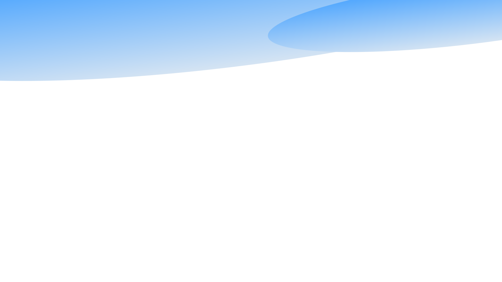
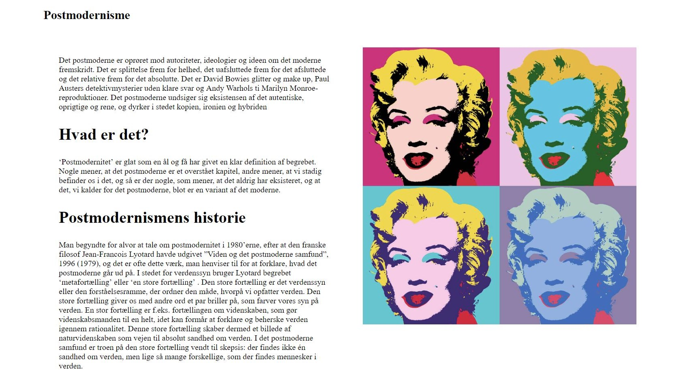
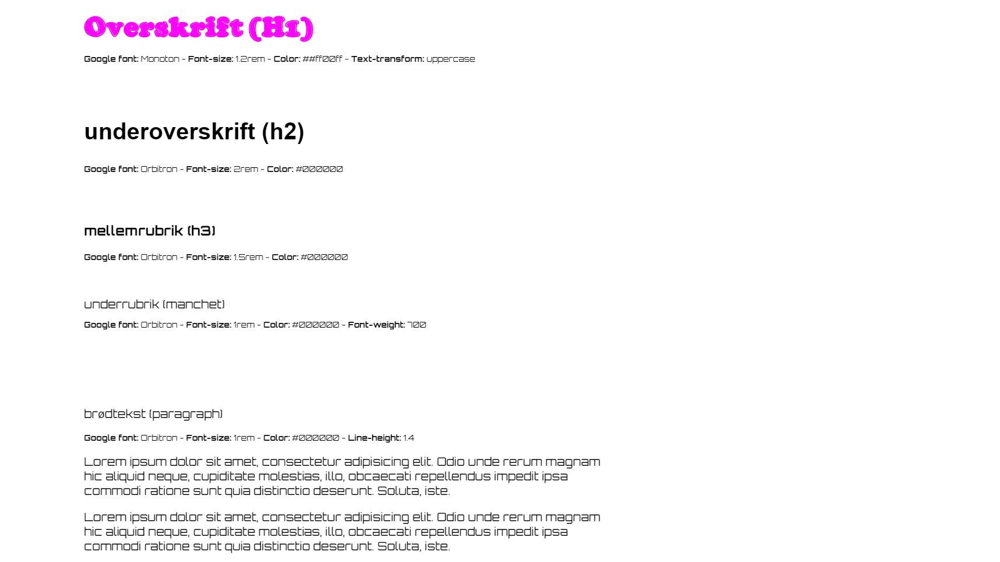
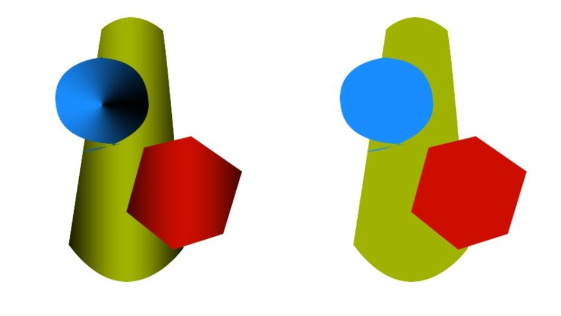

Tema 1 - 1.04.02 - responsive_site_v2
Se den fulde opgave her
Dette tema handlede om grundlæggende web og nogle af de vigtigste redskaber i det grundlæggende webdesign. Formålet var at lære hvordan man skriver grundlæggende HTML og CSS i brackets. Derudover blev vi introduceret til forskellige Adobe programmer, såsom Indesign og photoshop, som vi i dette forløb brugte til at designe og skitsere layouts til vores websites, før vi kunne kode dem i HTML og CSS. Vi fik undervisning i hvordan vi vha. farver, fonte og komposition kunne give vores side en rød tråd, der stemte overens med vores stilarter, samtidigt med et gøre den overskuelig.
I tema 1 lavede vi opgaven 01.04.02 – responsive_site_v2, som omhandlede en given stilart. Min opgave var at lave en side der omhandlede den postmoderne stilart. Af temaet havde vi fået forståelse for hvilke farver, fonte og hensigtsmæssige kompositioner der gjorde sig gældende for den enkelte stilart. Dette gav os et indblik i hvordan vi sammen med vores evner i Indesign, burde opstille vores hjemmeside. Vi lavede en skitse i Indesign, der gav mig et overblik over kompositionen, ift. margin, padding og columns, samt hvilken form for indhold siden skulle indeholde. Dette overskueliggjorde kodningsprocessen, da vi skulle til at skrive koden i HTML og CSS.

Jeg forsøgte så godt jeg kunne at få mit layout til at følge skitsen for et afleveringseksempel, samt inkorporere postmoderne stilistiske træk. Dette gjorde jeg ved at finde billedeksempler der klassificerede min stilart, samt en mangfoldighed af forskellige og lyse farver, som var kendetegn for den postmoderne stilart. Derudover fandt jeg googlefonte og farver til disse, som passede til stilarten, samtidigt med at gøre siden overskuelig. Desværre blev fontene og farverne til dem, kun kodet ind på styletilet af siden og ikke på resten af websitet. Jeg kan ikke huske årsagen til dette, men formålet var at have fonte og farver på hele sitet. Ideen var at implementere 2 primære fonte på siden, som i overskrifterne var funky og farverige, som var typisk for min stilart. Til brødteksten valgte jeg en font som gav den et digitalt look, for at drage en parallel til den digitale udvikling, der kunne forbindes med den postmoderne stilart.

Vi lavede også et splash-billede, som i mit tilfælde bestod af et farverigt Marilyn Monroe-billede, der skær sig igennem et firkantet bybillede, som skulle symbolisere kontrasten mellem den postmoderne og moderne stilart. Splash billedet blev gjort responssivt med media-queries, så den passede på flere platforme.
Siden blev gjort responssivt, hvilket var let, eftersom vi havde inddelt siden i kolonner og flex-boxe, som let kunne flex-wrappes og indordne sig, når siden blev forstørret eller formindsket.
Vi lavede også favicons, som jeg opbyggede af en kombination af farver og mønstre, som endnu en gang klassificerer den postmoderne stilart, som kan betegnes som kaotisk og farverig.
